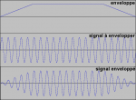

Bienvenue à tous. Ce tutoriel vous propose de découvrir ou d'approfondir vos conaissances sur Csound, un langage de programmation sonore. Mais également sur l'aspect théorique de la synthèse sonore, du traitement du signal ou encore de la musique en général. Cela dans le but de produire des sons, de les assembler, et pourquoi pas de faire de la musique agréable à l'oreille. ;)
Il est théoriquement possible de synthétiser tout et n'importe quoi grâce à Csound. Il ne connait ni problème de qualité sonore ni limite de puissance, mais en contrepartie il est relativement dur à aborder et à maîtriser. Pour avoir un aperçu plus concret de ce qui est faisable, jetez une oreille aux podcasts du site officiel : csounds.com/podcast-entries-by-tag.
Commençons par enfoncer une porte ouverte : qu'est-ce que la synthèse sonore ? Il s'agit tout simplement de l'ensemble des techniques consistant à (re)produire un son. Que ce soit la génération de sonorités totalement artificielles (bruit de sabre laser sur fond de moteur de vaisseau spatial) ou la reproduction de sons naturels (piaillement d'oiseaux sur fond d'écoulement de rivière).
Csound est fabuleux outil pour la synthèse sonore dans la mesure où il s'agit d'un langage de programmation "sonore". Il permet de synthétiser, de traiter et de restituer un signal sonore [20-2] grâce à du code source.
Il est entièrement codé en C, ce qui lui assure une bonne portabilité. De plus il est libre et open source puisque sous licence GNU GPL. Le langage a été originellement codé par Barry Vercoe [20-3], et en est actuellement à sa version 5.12 Vous pouvez trouver une chronologie complète de son développement dans le manuel [21-1].
Il est théoriquement possible de (re)produire n'importe quel son et de l'assembler avec d'autres, sans contraintes particulières en matière de qualité (à moins que vous ayez des standards jamais vu jusqu'ici) ou de puissance puisque les rendus ne sont pas obligatoirement en temps réel. Ce qui signifie que vous pouvez programmer un fichier sonore particulièrement complexe et coûteux en ressource puis laisser Csound le compiler. Ça prendra le temps que ça prendra mais au final le travail sera fait.
En contrepartie Csound n'est pas particulièrement "user friendly", en clair il est difficile à apprendre et à utiliser. C'est d'ailleurs pour remédier à ce dernier problème que plusieurs frontends ont étés créés [22-X], facilitant notamment la création musicale.
Les différentes approches
Il existe plusieurs logiciels ou langages permettant de faire la synthèse sonore. Il y a les logiciels fonctionnant entièrement par interface graphique tels Reason, Fruity Loops ou Guitar Pro dans une moindre mesure. Ce sont les plus simples d'utilisation mais souvent aussi les plus limités.
Viennent ensuite les logiciels ou langages graphiques fonctionnant par diagrammes (flowchart en Anglais) aussi appelés patch. On peut notamment citer Reaktor et Pure Data. Ceux-ci montrent à l'écran sous forme de flowchart ce qui est sous forme de code source dans Csound. Le screenshot de droite montre un exemple de patch réalisant un oscillateur sinusoïdal basique sous Pure Data.
La même chose sous Csound ressemble à :
aout oscil 10000, 440, 1
outs aout, aout
Viennent enfin les langages de programmation texte dont font partis Csound, ChucK ou encore SuperCollider (qui peut accueillir une GUI). En tant que tel, csound nécessite un compilateur pour fonctionner, qui prend en entrée un ou plusieurs fichiers textes et en sort soit un fichier audio, soit un flux audio en temps réel. Le processus est résumé par le tableau suivant :
Etape
Description
1
Rédiger le code csound dans un fichier texte
2
Lancer le compilateur avec le fichier source
3
Récupérer la sortie sous forme soit de fichier, soit de flux audio live
Intéressons nous un moment à la syntaxe du langage, en gros ce à quoi va ressembler le code que nous allons entrer dans les fichiers sources. Le fonctionnement de Csound est basé sur des opcodes, l'abréviation de operation code. Chaque opcode a une fonction bien précise permettant d'effectuer une opération. Certains permettent de générer ou modifier un signal, d'autres d'effectuer des opérations mathématiques plus ou moins complexes, d'autres encore de contrôler les entrées/sorties, etc... Il en existe vraiment pour tout et n'importe quoi, plus de 1300 au total [20-2], dont certains sont toutefois dépréciés à l'heure actuelle.
Pour en revenir à la syntaxe, vous ne devriez pas être trop dépaysé si vous avez déjà tâté un peu d'assembleur. Chaque ligne est identifiée par une étiquette et correspond à une opération, indiquée par l'opcode. Le résultat d'une opération peut être utilisé par un autre opcode en lui donnant l'étiquette de la ligne. Prenons par exemple le code suivant :
aout oscil 10000, 440, 1
Cette ligne de code est composée des éléments suivants :
L'étiquette :aout. Elle se trouve toujours au tout début de la ligne et commence forcément par a, k ou i.
L'opcode :oscil
Les arguments :10000, 440 et 1. Ils se trouvent juste après l'opcode.
Pour information cette ligne crée un signal périodique ayant une fréquence de 440 Hz et une amplitude de 10000 unités (nous verrons plus tard ce que cela veut dire). Il est possible d'utiliser ce signal comme argument d'un autre opcode via l'étiquette aout.
Il y a de fortes chances pour que le package Csound soit dans les repository standards de votre distribution. Vérifiez tout de même que le numéro majeur de la version est 5. Si vous ne trouvez pas le package, il est toujours possible de télécharger un fichier au format tar.gz sur Sourceforge [20-4].
Sous Mac ou Windows
N'ayant accès à ni l'un ni l'autre de ces OS je ne peux pas vous fournir de procédure détaillée quant à l'installation. Il existe néanmoins des applications d'installation téléchargeables sur sourceforge [20-4] qui devraient vous permettre d'y arriver sans trop de problèmes.
Csound fonctionne par un appel via un terminal. La commande csound possède pléthore de paramètres et d'options en tout genre. Nous allons rapidement passer dessus dans la mesure où la grande majorité peut être définie à l'intérieur même des fichiers source (ce que nous ferons systématiquement). Ainsi l'appel à csound va le plus souvent se résumer à :
csound mon_fichier.csd
Il est possible néanmoins que vous tombiez un jour sur des fichiers issus d'anciennes versions de Csound. Auquel cas il y en aura 2 par projet et l'appel à csound ressemblera alors à :
csound mon_fichier.orc mon_fichier.sco
Testons maintenant que votre installation fonctionne. Pour cela copiez le code suivant dans un fichier texte que vous pouvez appeler comme bon vous semble du moment qu'il porte l'extension .csd ("test.csd" par exemple).
<CsoundSynthesizer>
<CsOptions>
;-odac ; real time render
-o premier_projet.wav -W ; file render
</CsOptions>
<CsInstruments>
sr = 44100
ksmps = 10
nchnls = 1
instr 1
iamp = p4 ; global amplitude
ifreq = p5 ; frequency
aout oscil iamp, ifreq, 1 ; basic oscillator
out aout ; output the sound
endin
</CsInstruments>
<CsScore>
f 1 0 4096 10 1 ; sine wave
;iid | sta | dur | amp | freq
i 1 0 .5 10000 440
i 1 + . . 460
i 1 + . . 480
i 1 + .25 . 460
i 1 + 2 . 440
i 1 ^+.25 1.75 . 220
i 1 ^+.25 1.5 . 660
e
</CsScore>
</CsoundSynthesizer>
Nous analyserons en détail le contenu de ce fichier lors du prochain chapitre, mais pour le moment contentons nous de le compiler à l'aide de la commande csound, comme vu plus haut.
Si tout fonctionne Csound devrait avoir créé un fichier nommé "premier_projet.wav" dans le répertoire courant. Écoutez le pour vous assurer que tout à fonctionné. En effet, le son n'est pas des plus harmonieux, mais il faut bien commencer quelque part !
Maintenant que nous avons installé Csound et que nous nous sommes assuré qu'il fonctionne, nous pouvons passer aux choses sérieuses. C'est à dire l'étude de la structure des fichiers et des opcodes de base, etc... Mais avant tout, abordons le sujet des signaux périodiques, indispensable à la compréhension de la création d'un son.
Tout ceux qui se sont intéressés de près ou de loin à l'électronique ne devraient pas être trop dépaysés par ce chapitre, puisque nous allons y voir les formes de signaux périodiques les plus classiques. Cela peut vous paraitre saugrenu de tomber là dessus avant d'avoir tapé la moindre ligne de code Csound, mais le fait est que c'est indispensable pour comprendre la façon dont un son est créé.
Une bonne partie de ce que nous allons voir maintenant sera mise en pratique dès le prochain chapitre.
Le graphique de droite montre ce qu'on appelle un signal sinusoïdal. L'axe des abscisses (horizontal) représente le temps, et l'axe des ordonnées (vertical) représente l'amplitude. Dans le cas d'un signal électrique il s'agit du voltage.
Un signal peut représenter beaucoup de choses, mais dans le cadre de ce tutoriel il est vraisemblable que les signaux présentés correspondent directement aux signaux électriques envoyés aux enceintes (ou peu importe le périphérique utilisé). Si vous ne comprenez pas comment un signal électrique peut être transformé en son, intéressez vous de plus près au fonctionnement des haut-parleurs [51-X] (nous aurons l'occasion d'y revenir lors du chapitre d'introduction à la synthèse sonore).
Chaque forme de signal produit un son différent. Le signal sinusoïdal est le plus basique qui puisse exister, on dit qu'il est pur. Le son qu'il produit est semblable à un sifflement plus ou moins aigu selon sa fréquence. Si vous avez suivi le chapitre précédent pour tester que votre installation de Csound fonctionne, vous l'avez entendu dans le fichier "premier_projet.wav". Nous verrons dans le chapitre suivant comment modifier ce fichier et contrôler la hauteur des notes en modifiant la fréquence du signal.
La fréquence justement est l'un des éléments qui caractérisent un signal sinusoïdal. En voici la liste :
La période
La fréquence
L'amplitude maximale
La phase
La période représente le temps que met le signal pour "revenir à son point de départ". Cette durée est indiquée par la lettre T sur le premier graphique de la page. Si on poursuit l'axe temporel de celui-ci, on s'aperçoit que le signal se répète (graphique de droite).
La fréquence est égale au nombre de périodes du signal contenues dans 1 seconde. Elle est exprimée en Hertz (Hz). Pour un signal ayant la hauteur de la note La3, sa fréquence sera de 440Hz, c'est à dire qu'il se répétera 440 fois dans une seconde. Ce qui nous donne une période de 1 seconde divisée par 440. La plupart des diapasons ainsi que la tonalité du réseau téléphonique Français (fut un temps) produisent un signal sinusoïdal de 440Hz.
L'amplitude maximale porte bien son nom, il s'agit de l'écart entre l'axe horizontal (0) et l'amplitude du point le plus "haut", ou le plus "bas", cela revient au même (1 pour le graphique ci-dessus). La phase est une notion permettant de comparer 2 signaux sinusoïdaux entre eux. Sur le graphique à droite par exemple, les trois signaux sont sinusoïdaux, de même amplitude et de même fréquence, mais ils sont déphasés.
Il est possible de calculer précisément cet écart en regardant la phase à l'origine de chaque signal. C'est à dire l'angle que formerait la projection sur un cercle trigonométrique du point du signal où x vaut 0. En gros donc, chaque moment t d'une phase correspond à un angle entre 0 et 360 degrés. Dans le cas de notre graphique, le signal vert est décalé de 90 degrés par rapport au signal rouge. On dit qu'ils sont en quadrature de phase. Les signaux rouge et bleu en revanche sont décalés de 180 degrés. Ils sont en opposition de phase.
Comme vous pouvez le voir sur le graphique, le signal n'est pas visuellement carré mais plutôt rectangulaire. Il s'agit en fait d'une question d'échelle. En modifiant l'échelle de l'axe de l'amplitude, on peut obtenir un signal visuellement parfaitement carré sans modifier les valeurs.
Ce qui caractérise vraiment un signal comme étant "carré" c'est le rapport des périodes positives sur les périodes négatives. Celui-ci est appelé rapport cyclique (duty cycle en anglais), et un signal "vraiment" carré a un rapport cyclique de 50%, ce qui est le cas de celui représenté sur le graphique.
Quand le rapport cyclique est très faible, cela signifie que les périodes positives (hautes) sont très courtes. On appelle ce type de signal des pulsations (pulse wave en anglais).
Le signal carré est beaucoup plus agressif, percutant à l'oreille que le signal sinusoïdal. Les vieilles consoles de jeu vidéo Nintendo utilisaient principalement des signaux carrés par exemple (la NES notamment) [10-1].
Signal triangulaire / dents de scie
Le signal triangulaire croît et décroît de manière régulière, lui conférant la forme dont il tire son nom. Le signal en dents de scie (sawtooth wave en anglais) quant à lui croît de manière linéaire mais décroît instantanément. Il est moins fréquemment utilisé que les signaux carrés ou triangulaires.
Comme les précédents types de signaux ceux-ci possèdent également une période qui se répète indéfiniment (comme vous pouvez le constater sur le graphique de droite). Et par conséquent une fréquence dont la valeur est toujours égale à 1/T en Hz, où T représente la durée de la période.
Les signaux triangulaire et sawtooth produisent un son assez indescriptible, à mi-chemin entre celui d'une sinusoïde et d'un carré. Vous aurez l'occasion d'entendre tous ces sons par vous-mêmes lors du prochain chapitre où nous les synthétiserons.
Ce qui définit un signal périodique est le fait qu'il possède comme son nom l'indique, une période. Celle-ci se répète indéfiniment, mais cela laisse une très grande liberté quant à la forme du signal. Le graphique de droite par exemple représente un signal à la forme plutôt inhabituelle mais bel et bien périodique.
N'importe quel signal périodique ayant une fréquence suffisamment élevé (c'est à dire se répétant suffisamment rapidement) sera perçu par une oreille humaine comme un timbre "uni" [10-2], et non comme une variation d'amplitude (nous y reviendrons lors de l'explication du phénomène de vibrato).
Comme pour le signal sinusoïdal, la hauteur du son produit par n'importe quel signal périodique est déterminée par sa fréquence. Alors que son timbre est déterminé par sa forme. Le timbre des instruments à corde par exemple, tel que celui du violon est vraiment particulier et le signal périodique qui correspond est très "tordu" et difficile à reproduire. Il existe un puissant outil mathématique appelé séries de Fourier qui est à la base de toute une branche des techniques de synthèse sonore, et plus globalement de traitement du signal. Il stipule en gros que n'importe quel signal périodique peut être perçu comme une addition d'un certain nombre de signaux sinusoïdaux, de fréquence et d'amplitude variable. Même les signaux carrés ou triangulaire peuvent être obtenus par l'addition de signaux sinusoïdaux. Nous y reviendrons lors du chapitre consacré à la synthèse additive.
Pour finir, si nous avons vu jusqu'ici des signaux ayant des parties positives et négatives sensiblement symétriques, ce n'est pas une obligation, et certains signaux sont uniquement positifs. Un signal positif et négatif est qualifié de bipolaire, tandis qu'un signal purement positif est unipolaire.
Les graphiques de droite montrent deux signaux unipolaire. Le premier (en haut) est un signal sinusoïdal "classique" excepté le fait que son amplitude se situe entre 0 et 1. Le second (en bas) est un signal sinusoïdal dont les parties négatives ont été transformées en parties positives. On appelle cette technique un redressement de signal.
Voici un autre chapitre totalement fondamental. C'est ici que nous allons voir les caractéristiques communes à n'importe quel projet Csound, ainsi que la syntaxe du langage ou encore les grands concepts régissant la création d'un instrument et d'une partition.
Même si vous ne serez probablement pas capables de reproduire la 5eme symphonie de Beethoven à la fin de ce chapitre, il est important de le lire attentivement.
Comme nous l'avons vu lors du premier chapitre de ce tutoriel, Csound nécessite 1 ou 2 fichiers par projet. En fait, tout projet Csound est composé de 2 grandes parties :
Orchestra (l'orchestre)
Score (la partition)
A quoi on peut éventuellement rajouter les options de compilation, mais qui ne sont pas explicitement associées au projet dans le cas de deux fichiers séparés. Comme son nom l'indique, l'orchestre va contenir la déclaration de nos instruments, tout comme un vrai orchestre, sauf qu'ici les instruments peuvent produire des sons bien plus variés que dans la réalité. La partition quant à elle agit comme une vrai partition, à savoir qu'elle va contenir toutes les notes que l'on veut jouer ainsi que les informations sur la durée, l'instrument à utiliser, etc...
Dans le cas d'un projet en 2 fichiers, chacun contient une des deux parties. Le fichier .orc contient l'orchestre et le fichier .sco va contenir la partition. Au moment de la compilation, il faut alors spécifier les éventuelles options via la ligne de commande. Dans le cas d'un fichier unique en revanche, les 2 parties ainsi que les options de compilation sont regroupées dans un seul fichier texte portant l'extension .csd. Les différentes parties sont alors délimitées grâce à une syntaxe de type XML, que vous pouvez voir sur le code suivant :
Les options sont bien entendu contenues entre les balises <CsOptions>. C'est ici par exemple qu'on peut spécifier si le rendu doit se faire en temps réel ou dans un fichier, et le cas échéant le format de celui-ci, etc... Nous allons y revenir juste après. L'orchestre quant à lui est contenu entre les balises <CsInstruments> et la partition entre les balises <CsScore>. Le tout étant contenu dans les balises <CsoundSynthesizer> qui délimitent la partie du fichier prise en compte par Csound.
Dans le cas de 2 fichiers séparés, il n'y a pas besoin de balises XML, chaque fichier ayant une fonction bien précise.
Abordons maintenant les principales options qui nous seront utiles :
-odac : inscrit le résultat sur la sortie de la carte audio (temps réel)
-o : permet de spécifier un nom de fichier dans lequel sera inscrit le résultat
-W : le format du fichier sera WAV
-d : désactive toute les fenêtres qui pourraient apparaitre lors de la compilation
Il existe bien d'autres options, notamment pour s'interfacer avec des instruments MIDI, mais celles-ci devraient nous suffire pour un bon moment. Si vous voulez jeter un œil à la liste complète, elle est disponible dans la documentation [21-2].
Si nous reprenons le fichier du premier chapitre, on s'aperçoit que nous avons spécifié l'option -o suivie d'un nom de fichier et de -W. Csound va donc inscrire le résultat de la compilation dans un fichier .wav nommé "premier_projet.wav". La ligne précédente (4) n'est pas prise en compte car elle commence par un ; (point virgule).
L'orchestre est comme son nom l'indique la partie du fichier où nous allons spécifier les instruments. Pour ce premier projet nous n'en créerons qu'un seul. Si nous reprenons le code contenu dans le fichier du premier chapitre, on s'aperçoit qu'il est composé de 2 parties, dont vous pouvez voir la première à droite.
sr = 44100
ksmps = 10
nchnls = 1
Ce bloc paramètre plusieurs choses. Les deux premières lignes s'occupent du taux d'échantillonnage (sr pour sample rate) et du taux de contrôle. Nous reviendrons longuement sur les différents taux et sur la théorie de l'échantillonnage numérique lors d'un prochain chapitre. Pour le moment sachez juste que 44,1KHz est le taux d'échantillonnage des CD audio [50-2]. Ce qui veux dire que le son que nous allons produire aura la qualité de n'importe quel CD audio dans le commerce.
La ligne 3 permet de spécifier le nombre de canaux audio en sortie (nchnls pour number of channels). Pour le moment nous restons en mono, mais il est possible de sortir du son sur jusqu'à 32 canaux différents. Largement supérieur donc à ce qu'une installation 5.1 "dernier cri" peut retranscrire.
La deuxième partie de notre orchestre qui contient la déclaration de l'instrument proprement dite est la suivante :
instr 1
iamp = p4 ; global amplitude
ifreq = p5 ; frequency
aout oscil iamp, ifreq, 1 ; basic oscillator
out aout ; output the sound
endin
Les lignes 1 et 6 servent à délimiter la déclaration de l'instrument. Toute déclaration d'instrument doit commencer par l'opcode instr suivi du numéro de l'instrument, et se terminer par endin.
Les lignes 2 et 3 servent à définir des variables. iamp est le nom de la variable, = est bien évidemment l'opérateur d'affectation et p4 représente un paramètre de l'instrument. Comme nous le verrons dans le chapitre consacré à l'échantillonnage, la première lettre des noms de variable a une signification bien précise. L'utilité d'employer des noms de variables à la place des p4, p5, etc... est qu'ils sont beaucoup plus compréhensibles et faciles à se rappeler.
Un paramètre est une valeur qui peut être modifiée et qui va agir sur l'un des aspects de l'instrument. Comme l'indique le commentaire, p4 qui est associé à la variable iamp va définir l'amplitude de la note. Ainsi une note ayant 5000 pour valeur de p4 sera 2 fois moins forte qu'une note ayant 10000 pour valeur de p4. La valeur des différents paramètres peut être spécifiée lors de la déclaration de chaque note. La raison pour laquelle on utilise directement p4 est que les 3 premiers paramètres sont réservés quoi qu'il arrive, comme nous le verrons plus loin dans la partie consacrée à la partition.
La ligne 4 est la plus importante ici, c'est elle qui définit le son produit par l'instrument. Notez pour commencer l'étiquette aout qui va nous permettre de réutiliser le résultat de l'opcode oscil. Celui-ci prend trois paramètres pour créer un oscillateur. Le premier concerne l'amplitude du signal en sortie, le deuxième sa fréquence, quant au troisième, il s'agit de la forme. Sa valeur (1) correspond au numéro d'une f-table définie dans la partition. C'est cette f-table qui définit la forme du signal (sinusoïdal dans notre cas).
Nous reviendrons longuement sur les f-tables et les manières de les générer lors d'une partie dédiée car il y a énormément de choses à dire sur le sujet. Pour le moment sachez simplement qu'un oscillateur parcours le signal défini par la f-table et retransmet les valeurs correspondantes en sortie. Comme il le fait en boucle à la vitesse précisée par l'argument 2, on peut dire que l'opcode oscil permet de synthétiser en sortie un signal périodique dont on maitrise l'amplitude, la fréquence et la forme.
Pour finir la ligne 5 permet de "sortir" le son correspondant à l'étiquette aout. L'opcode out ne fonctionne cependant que lorsqu'il y a un seul canal en sortie (un son mono donc). Lorsqu'on spécifie 2 canaux pour avoir un son stéréo ("nchnls = 2"), il faut utiliser l'opcode outs[21-1].
f 1 0 4096 10 1 ; sine wave
;iid | sta | dur | amp | freq
i 1 0 .5 10000 440
i 1 + . . 460
i 1 + . . 480
i 1 + .25 . 460
i 1 + 2 . 440
i 1 ^+.25 1.75 . 220
i 1 ^+.25 1.5 . 660
e
Le contenu actuel de notre partition est visible sur le code de droite. Vous remarquerez que chaque ligne commence par une lettre appelée préfixe. Celle-ci détermine la nature de ce qui suit. Par exemple la première ligne qui commence par le préfixe f est une déclaration de f-table. Comme dit plus haut, les f-tables auront le droit à une partie entière du fait de leur nombre et de leur complexité.
La ligne 3 qui commence par un point virgule est un commentaire servant simplement à repérer plus facilement à quoi correspondent les nombres qui suivent. A partir de la ligne 4 justement, jusqu'à la ligne 10, il s'agit des notes qui vont être jouées. On peut voir que la déclaration d'une note est composée du préfixe i suivi de plusieurs paramètres.
Comme nous l'avons vu plus haut, les trois premiers (p1, p2 et p3) sont quoi qu'il arrive réservés par Csound. Il s'agit en fait du numéro de l'instrument à utiliser, du temps au départ de la note et de la durée de celle-ci. Si on ajoute à ça les deux paramètres (p4 et p5) que nous avons spécifiés pour notre instrument, cela donne :
p1 : numéro de l'instrument à utiliser
p2 : temps au départ de la note
p3 : durée de la note
p4 : amplitude de la note
p5 : fréquence de la note
Si nous reprenons la première note par exemple, elle va utiliser l'instrument numéro 1, se déclencher au temps 0, donc dès le début, durer pendant 0.5 seconde, avoir une amplitude de 10000 et une fréquence de 440Hz. Par défaut, l'unité temporelle utilisée dans Csound est la seconde. Voila pourquoi p3 représente 0.5 seconde (notez qu'il n'est pas nécessaire de préciser le 0 avant le point). Par défaut toujours, l'amplitude maximale d'un projet Csound est de 32767 unités. Notre note à 10000 va donc se situer approximativement à un tiers de l'amplitude maximale. Si vous avez lu attentivement le chapitre précédent vous avez sans doute remarqué qu'avec sa fréquence de 440Hz, cette note est un La.
Reste à expliquer les différents symboles à la place des nombres pour certaines notes. Dès la deuxième, p2 n'est pas un nombre mais un +. Il s'agit d'un symbole de substitution qui représente tout simplement le temps de départ de la note précédente plus sa durée. Ce qui signifie que cette deuxième note va démarrer tout de suite après la fin de la première (au moment 0.5). Et ainsi de suite pour les suivantes, excepté pour les deux dernières. Les points quant à eux signifient simplement qu'on utilise la même valeur pour ce paramètre que lors de la précédente note. Les trois premières notes ont donc une durée de 0.5 secondes, et toutes les notes ont une amplitude de 10000.
Le dernier symbole enfin est celui-ci : ^+x , où x représente une durée. Il signifie que le temps de départ de la note sera égal à celui de la note précédente plus la durée indiquée par x. La note de la ligne 9 par exemple, commencera 0.25 secondes plus tard que celle de la ligne 8. Et celle de la ligne 10, commencera 0.25 seconde plus tard que celle de la ligne 9. Donc 0.5 seconde plus tard que celle de la ligne 8. Étant donné que la durée de ces notes est supérieure à l'écart entre les moments où elles sont jouées, elles vont se chevaucher. Comme vous avez d'ailleurs pu l'entendre.
Pour conclure le préfixe e sert simplement à indiquer que la partition se termine ici.
Pour aller plus loin
Comme promis lors du précédent chapitre, voici les déclarations de f-table qui permettent de générer les formes de signaux les plus courantes :
Il vous suffit de remplacer la ligne déclarant la f-table sinusoïdale dans le fichier par l'une de celles-ci. Vous pouvez d'ailleurs constater dans la fenêtre qui apparaît au moment de la compilation et qui affiche le contenu de la f-table (la forme du signal, pourrait-on dire), que celle-ci a changé.
t 0 120
;iid | sta | dur | amp | freq
i 1 0 .375 10000 659.26
i 1 + . . 659.26
i 1 ^+.5 . . 659.26
i 1 ^+.625 . . 523.25
i 1 + . . 659.26
i 1 ^+.625 1 . 783.99
i 1 ^+1.125 . . 349.23
i 1 ^+1.125 .5 . 523.25
i 1 ^+.625 . . 392
i 1 ^+.625 . . 329.63
i 1 ^+.625 .25 . 440
i 1 ^+.375 .375 . 493.88
i 1 ^+.5 . . 466.16
i 1 + 1 . 440
e
Pour vous entraîner à écrire des partitions sous cette forme un peu particulière, vous pouvez essayer de modifier celle qui existe déjà. Malgré la très grande simplicité de l'orchestre, il est possible d'obtenir des résultats intéressants. Comme par exemple celle qui se trouve à droite.
Les connaisseurs... connaîtront. Bien sûr le son est très "brut de décoffrage", mais nous verrons plusieurs techniques dans les chapitres suivant permettant de faire des choses plus élaborées, et plus douces à l'oreille.
Notez au passage le préfixe t qui permet de modifier le tempo de la partition. Par défaut il est de 60 battements par minute, donc 1 unité de temps est égale à une seconde. En mettant le tempo à 120 (comme à la première ligne de ce code), une unité de temps est égale à une demi-seconde. Il aurait d'ailleurs été possible de passer le tempo à 240 et de multiplier toutes les valeurs temporelles par 2 pour éviter d'avoir autant de chiffres après la virgule.
Vous remarquerez également que les fréquences des notes ne sont pas dues au hasard, en fait elle correspondent aux fréquences des notes "classiques" employées dans la musique dite occidentale. Il existe d'ailleurs plusieurs opcode dans Csound permettant de faire la conversion automatique entre des grandeurs physiques telle que la fréquence, et leurs équivalents musicaux. Comme nous aurons le plaisir de le voir lors des prochains chapitres.
Vous avez du vous en rendre compte, l'écriture de "vraies" partitions complètes via ce moyen est très très fastidieuse. C'est pourquoi de nombreux frontends et autres utilitaires ont été créés pour se simplifier la tâche [22-X]. Même si nous ne nous en servirons pas dans ce tutoriel (pas au début du moins), vous serez sûrement amenés à les utiliser un jour ou l'autre.
Si vous êtes pressés, curieux ou que vous n'avez tout simplement envie de faire ce TP bien que vous aimeriez entendre le résultat final, le fichier audio est disponible à cette adresse : http://sanglier-codeur.org/misc/clairLune/clairLune1.wav
Une excellente manière d'illustrer tout ce que nous voyons dans ce tutoriel est de le mettre en pratique dans la réplique d'un morceau de musique existant. En l'occurrence nous allons reprendre un classique parmi les classiques : Au clair de la lune. J'imagine que la plupart d'entre vous ont entendu cette chanson dans leur enfance et s'en souviennent très bien, mais pour les autres voici une session de rattrapage en vidéo :
L'idée de cette série de TP accompagnant le tutoriel est que nous allons toujours reproduire le même morceau mais en ajoutant à chaque fois les connaissances que nous venons d'acquérir pour le rendre plus complexe et plus intéressant. Pour cette première version nous nous contenterons de faire "bip bip biiip" étant donné que nous n'en sommes vraiment qu'au début. ;)
Ce tutoriel au contraire est placé sous licence CC-by-sa, comme indiqué dans le bloc "informations sur le tutoriel" en haut à droite. Ce qui permet d'en disposer plus librement, tant que les conditions de la licence sont respectées. Vous pouvez trouver plus d'informations sur les licences et le droit d'auteur dans ce très bon tutoriel : Choisir une licence pour son tutoriel.
Une autre chose importante à retenir est que l'oeuvre est différente de son support. Par exemple si vous achetez un CD de musique, vous êtes propriétaire du CD, pas de la musique qu'il y a dessus. Dans le même ordre d'idée, il y a une différence entre la partition d'une musique et l'interprétation qui en est faite. Tout le monde peut jouer au clair de la lune, mais on ne fait pas ce qu'on veut d'un enregistrement d'au clair de la lune pour autant.
Attaquons les choses sérieuses sans plus attendre. Voici la partition que nous allons programmer :
Les paroles du début de la chanson sont là pour faire joli, mais en revanche le nom des notes devrait aider les personnes peu habituées au solfège. Ce n'est pas indiqué ci-dessus, mais le tempo est de 120 pour une noire. Ce qui signifie qu'une noire durera 0,5 seconde.
Notation de la hauteur d'une note
Jusqu'à maintenant nous avons spécifié la hauteur des notes que nous voulions jouer via leur fréquence. Ce qui en code Csound se traduit par :
; ==============================================================
; quelque part dans l'orchestre
; ==============================================================
ifreq = p4 ; frequency
aout oscil 10000, ifreq, 1 ; basic oscillator
out aout ; output the sound
; ==============================================================
; quelque part dans la partition
; ==============================================================
;iid | sta | dur | freq
i 1 0 .5 440 ; la frequence est de 440
i 1 + .5 220 ; la frequence est de 220
C'est d'autant plus pénible que la plupart des notes de musique ont des fréquences qui ne tombent pas "juste" et qui sont tout simplement impossibles à retenir. Par exemple la fréquence du do3 est de 261.626 Hz... Heureusement le problème peut être résolu en utilisant un opcode qui va convertir une fréquence en une notation musicale classique, ou plutôt l'inverse. Cet opcode est cpspch. En voici un exemple :
; ==============================================================
; quelque part dans l'orchestre
; ==============================================================
ifreq = cpspch(p4) ; frequency
aout oscil 10000, ifreq, 1 ; basic oscillator
out aout ; output the sound
; ==============================================================
; quelque part dans la partition
; ==============================================================
;iid | sta | dur | freq
i 1 0 .5 8.09 ; note : la3 | frequence : 440
i 1 + .5 7.09 ; note : la2 | frequence : 220
Dans cet exemple, le quatrième paramètre d'une note (P4) va être converti par l'opcode cpspch avant d'être envoyé à l'oscillateur. Cet opcode prend en entrée un nombre de type "x.xx" et sort la fréquence correspondante en sortie. De prime abord, cela ne semble pas beaucoup plus simple que de taper la fréquence correspondante directement, mais en réalité cette notation est plus facile à retenir car le premier nombre correspond à l'octave de la note, et les deux derniers à la note proprement dite. Comme vous pouvez le voir dans le tableau récapitulatif des correspondances en annexe du tutoriel.
Pour conclure si nous reprenons les quatre premières mesures de la partition que voici :
Vous l'aurez sûrement remarqué, les quatre premières mesures sont les mêmes que les quatre suivantes et que les quatre dernières. Ce qui veut dire qu'on devrait écrire la même chose trois fois dans la partition. Heureusement non, ce n'est obligatoire grâce aux macros de partition. Une macro de partition est en fait un bout de partition auquel on va associer un nom. À chaque fois qu'on voudra écrire ce bout de partition, on écrira le nom associé à la place, et Csound comprendra qu'il faut utiliser le bout de partition au moment de la compilation. Voyons un exemple concret :
#define REPEAT ; le nom de la macro
# ; debut de la macro
i 1 + . . ; contenu
# ; fin de la macro
;iid | sta | dur | pitch
i 1 0 0.75 9.00
$REPEAT
$REPEAT
$REPEAT
e
Comme l'indiquent les commentaires, il faut utiliser la syntaxe "#define nomMacro # contenu #" pour déclarer une macro. On utilise généralement des noms de macro entièrement en majuscules pour bien les distinguer du reste, mais ce n'est pas une obligation. Le contenu de la macro doit être situé entre deux #, et peut être tout et n'importe quoi. L'exemple ci-dessus revient donc exactement au même que le code suivant :
;iid | sta | dur | pitch
i 1 0 0.75 9.00
i 1 + . .
i 1 + . .
i 1 + . .
e
Grâce à cette technique, nous allons pouvoir taper le code correspondant aux quatre premières mesures d'au clair de la lune puis l'utiliser trois fois en tapant simplement trois lignes. Pour plus d'informations sur les macros de partition, reportez-vous à la page de manuel correspondante : http://www.csounds.com/manual/html/ScoreMacros.html
Et bien voilà, nous avons vu tout ce qu'il fallait pour écrire cette première version d'au clair de la lune. Essayez de le faire par vous-même pour tester vos compétences puis lorsque vous aurez réussi (ou que vous en aurez marre de chercher ^^ ), comparez votre fichier avec celui qui suit :
<CsoundSynthesizer>
<CsOptions>
-odac ; real time render
;-o clairLune.wav -W ; file render
</CsOptions>
<CsInstruments>
sr = 44100 ; CD sample-rate
ksmps = 10
nchnls = 1 ; mono sound
instr 1
iAmp = 6000 ; amplitude
iFreq = cpspch(p4) ; frequency in pitch-class
aout oscil iAmp, iFreq, 1 ; basic oscillator
out aout ; output the sound
endin
</CsInstruments>
<CsScore>
f 1 0 4096 10 1 ; sine wave
t 0 120 ; 2 beats per second
#define PATTERN1
#
;iid | sta | dur | pitch
i 1 ^+4 0.75 9.00 ; 1st bar
i 1 ^+1 . .
i 1 ^+1 . .
i 1 ^+1 . 9.02
i 1 ^+1 1.75 9.04 ; 2nd bar
i 1 ^+2 . 9.02
i 1 ^+2 0.75 9.00 ; 3rd bar
i 1 ^+1 . 9.04
i 1 ^+1 . 9.02
i 1 ^+1 . .
i 1 ^+1 2.75 9.00 ; 4th bar
#
#define PATTERN2
#
;iid | sta | dur | pitch
i 1 ^+4 0.75 9.02 ; 1st bar
i 1 ^+1 . .
i 1 ^+1 . .
i 1 ^+1 . .
i 1 ^+1 1.75 8.09 ; 2nd bar
i 1 ^+2 . .
i 1 ^+2 0.75 9.02 ; 3rd bar
i 1 ^+1 . 9.00
i 1 ^+1 . 8.11
i 1 ^+1 . 8.09
i 1 ^+1 2.75 8.07 ; 4th bar
#
$PATTERN1
$PATTERN1
$PATTERN2
$PATTERN1
e
</CsScore>
</CsoundSynthesizer>
Rien de nouveau ni de compliqué si vous avez bien suivi jusqu'ici. Notez tout de même que nous imposons à chaque fois un petit silence entre les notes étant donné qu'on n'entendrait pas la transition entre deux mêmes notes dans le cas contraire. Vous aurez également remarqué qu'il y a des "clics" à chaque début de note. Autant de problèmes qui seront réglés dès la prochaine version. ;)
Avant toute chose il convient de définir clairement la différence entre les signaux analogiques et numériques. A l'heure actuelle le numérique s'impose un peu partout comme le nouveau standard. Le réseau de diffusion des chaines télévisées en France par exemple (TNT), est en passe de devenir tout numérique. Les supports musicaux sont quasiment exclusivement numériques. Mêmes les livres sont de plus en plus numérisés et accessibles depuis des terminaux informatiques.
En soi cette définition n'est pas très claire, mais elle prend du sens si on pense au fonctionnement de la mémoire numérique (celle des ordinateurs par exemple, des clefs USB, CD, etc...). Elle est organisée en unités, dont la plus petite est le bit qui peut valoir soit 0 soit 1. Viennent ensuite les octets, composés de 8 bits, puis les kilo-octets, mega-octets, etc... On voit donc immédiatement que quelque soit la taille de la mémoire dont on dispose, elle ne sera jamais infinie. On aura beau augmenter la capacité de stockage, le nombre de valeurs qu'elle peut contenir sera toujours fondamentalement limité.
Vous pouvez voir la représentation d'un signal numérique sur le graphique ci-dessous, à droite. Il est composé de 100 valeurs (une croix par valeur). On pourrait augmenter le nombre de valeurs qui composent le signal pour le rendre plus précis. Mais nous n'obtiendrons jamais la définition du signal analogique (graphique de gauche), qui est infinie.
En effet, les supports de stockage analogiques contiennent un nombre illimité de valeurs. Pas parce qu'ils peuvent contenir plus de musique en tant que telle, mais parce que leur niveau de détail est infini. En mathématique le nombre de points contenus entre un point A et un point B qui ne sont pas identiques est infini. Et bien ici, c'est la même chose. Le sillon d'un disque vinyle contient quelques minutes de musique, mais une infinité de valeurs, tandis qu'un fichier audio numérique possède un nombre fini de valeurs. C'est ce qui détermine d'ailleurs sa taille : plus celle-ci est grande, plus la qualité sera bonne, comme nous allons le voir.
Se pose maintenant la question de la conversion : comment passer d'un signal analogique à un signal numérique ? Le principe consiste à faire des « mesures » de la valeur du signal analogique à intervalles réguliers, puis à stocker celles-ci dans le fichier numérique. On relève donc des échantillons, d'où le nom de la méthode : échantillonnage (sampling en anglais). D'un point de vue physique, la conversion est effectuée par un composant électronique appelé CAN[53-1].
Pour prendre un exemple simple, intéressons-nous à un signal sinusoïdal :
Vous pouvez voir sur le graphique de gauche un signal sinusoïdal tout ce qu'il y a de plus classique. C'est lui que nous allons échantillonner. Les barres bleues des graphique à sa droite représentent les valeurs relevées à intervalles réguliers, qu'on appelle valeurs discrètes. On voit bien que ces valeurs correspondent au moment où le "centre de la barre" coupe le signal original.
Pour créer un fichier audio numérique, il ne reste plus qu'à y stocker les valeurs discrètes. Au moment de "jouer" la musique stockée numériquement, un composant appelé CNA[53-2] fera la conversion inverse et enverra un signal électrique analogique aux enceintes (ou plus généralement au périphérique de sortie).
Plus il y a de valeurs discrètes par unité de temps, et plus le signal numérique sera proche de l'original. Cette quantité est un paramètre essentiel dans le processus d'échantillonnage, il est déterminé par la fréquence d'échantillonnage (aussi appelée taux d'échantillonnage). Vous pouvez d'ailleurs voir que le graphique de droite a une fréquence d'échantillonnage 2,5 fois supérieur à celle du graphique du milieu.
Il se pose maintenant le problème suivant : plus la fréquence d'échantillonnage sera élevée, plus on aura de valeurs, et donc meilleure sera la fidélité au son original. Mais le fichier sera d'autant plus gros. Comment trouver un compromis acceptable ? Il existe une règle qui permet de nous donner une petite idée.
Le théorème de Nyquist-Shannon
Il s'agit d'un théorème fondamental dans l'audio-numérique. Il postule que pour échantillonner un signal correctement, il faut utiliser une fréquence d'échantillonnage au moins égale au double de la fréquence maximale de ce signal. Sans quoi les pertes de qualité peuvent être très importantes. Examinons les graphiques suivant pour mieux comprendre ce phénomène :
Le premier graphique montre le signal à échantillonner, le deuxième les échantillons et le troisième le signal échantillonné tel qu'il sera joué en sortie. On peut décomposer le signal à échantillonner en deux types de sinusoïdes. Les premières ayant une certaines fréquence et les deuxièmes ayant le double. Pour illustrer le théorème de Nyquist-Shannon donc, prenons une fréquence d’échantillonnage valant le double de la première catégorie et par conséquent la même chose que la deuxième.
Les ronds verts indiquent les échantillons relevés. On voit clairement que les premières sinusoïdes sont correctement détectées (même si la qualité est très mauvaise), alors que les deuxièmes sont complètement loupées. On tombe systématiquement sur la valeur 0. Ce qui a pour effet de produire un signal nul en sortie. On a tout simplement perdu la moitié du signal d'origine, sans compter la perte de qualité sur le reste.
Re-essayons maintenant en suivant le théorème de Nyquist-Shannon et en prenant une fréquence d'échantillonnage égale au double de la fréquence maximale du signal :
Voila qui est déjà beaucoup mieux. Avec cette fréquence d'échantillonnage aucune partie du signal d'origine n'est complètement ignorée, même si la qualité du signal échantillonné reste particulièrement mauvaise. Cette forme en "escalier" du signal de sortie est caractéristique d'un signal sous-échantillonné et est appelée aliasing.
L'aliasing est bien entendu un défaut qu'il faut éviter dans la mesure du possible. Voici un code qui illustre ce phénomène, il fonctionne sur un principe simple : on joue en sortie un signal sinusoïdal étant de plus en plus échantillonné. Vous pouvez constater visuellement les signaux de sortie successifs sur les graphiques de droite :
<CsoundSynthesizer>
<CsOptions>
-o aliasing.wav -W ; file render
</CsOptions>
<CsInstruments>
sr = 44100
ksmps = 10
nchnls = 1
instr 1
aout oscil 10000, 440, p4
out aout
endin
</CsInstruments>
<CsScore>
f 1 0 4 10 1 ; sine wave 4 samples
f 2 0 8 10 1 ; 8 samples
f 3 0 16 10 1 ; 16 samples
f 4 0 32 10 1 ; 32 samples
f 5 0 64 10 1 ; 64 samples
f 6 0 128 10 1 ; 128 samples
;iid | sta | dur | idf
i 1 0 1 1
i . + . 2
i . + . 3
i . + . 4
i . + . 5
i . + . 6
e
</CsScore>
</CsoundSynthesizer>
Il existe plusieurs taux de cadencement dans Csound, qui permettent d'effectuer un contrôle très fin des signaux sur lesquels on travaille [21-4]. En voici la liste (rate signifie taux en français) :
i-rate : une fois au début de chaque note
k-rate : à chaque passage dans la boucle de contrôle
a-rate : à chaque échantillon sonore de chaque boucle de contrôle
i-rate | note-rate
Les variables i-rate correspondent principalement aux valeurs des paramètres et à la durée des notes. Ils sont évalués lors de ce qu'on appelle l'initialization-time et restent constants pendant toute la durée de la note.
k-rate | control-rate
Les variables k-rate sont recalculées au taux de contrôle défini dans l'en-tête de l'orchestre, grâce à l'opcode kr. Si vous reprenez l'en-tête que nous avons utilisée dans le chapitre précédent (et que nous utiliserons la plupart du temps), vous remarquerez que le taux de contrôle n'est pas explicitement déclaré. Tout simplement car Csound le calcule automatiquement à partir du taux d'échantillonnage (sr) et du nombre d'échantillons dans une période de contrôle (ksmps).
Dans notre cas, sr vaut 44100, et ksmps vaut 10, ce qui nous donne un taux de contrôle (k-rate) de 4410 Hz. Les variables k-rate seront ré-évaluées 4410 fois par seconde. Ces variables sont principalement utilisées pour créer des signaux de contrôles, comme nous le verrons lors du prochain chapitre.
a-rate | audio-rate
Ce taux correspond tout simplement à la fréquence d'échantillonnage, ce qui veut dire que les variables a-rate seront ré-évaluées à chaque échantillon du signal de sortie, 44100 fois par seconde dans notre cas. Cette valeur est définie par l'opcode sr dans l'en-tête de l'orchestre.
Ces différents taux permettent donc de gérer des variables avec précision. La seule question restante étant de savoir comment associer une variable à un taux. En fait tout se joue sur la première lettre de la variable, appelée préfixe. Si c'est un i, la variable sera i-rate, si c'est un k, k-rate, etc... Peu importe le caractère qui suit le préfixe, il peut s'agir d'un tiret, d'une lettre ou d'autre chose.
Les signaux de contrôle permettent de contrôler l'évolution d'un autre signal. Par exemple une note. En effet jusqu'à présent nous étions capables de créer des notes ayant une certaine hauteur, amplitude, etc... mais nous étions incapables de les faire varier dans le temps. Ce qui donne non seulement un son d'une platitude ennuyeuse, mais qui pose aussi quelques problèmes techniques.
Si vous prêtez une oreille attentive au fichier créé lors du chapitre 3, vous pouvez entendre des "clics" au début de chaque note, c'est dû au fait que l'amplitude de la note est constante du début à la fin. Ce qui force le haut-parleur à passer de 0 à l'amplitude maximale instantanément, d'où l'apparition d'artefacts. Un signal de contrôle appelé couramment enveloppe de déclic permet de régler ce problème.
Il existe 3 types de signaux de contrôle correspondant aux 3 façons de modifier un signal dans le temps :
Les enveloppes : qui sont un pattern (modèle) de changement global du niveau sur toute la durée.
Les variations périodiques : qui sont des variations régulièrement récurrentes telles qu'un vibrato ou un trémolo.
Les variations apériodiques : qui sont des variations irrégulières, aléatoires ou quasi-aléatoires.
Les enveloppes
Comme son nom l'indique, une enveloppe va envelopper le signal sonore pour le faire varier. Une enveloppe de déclic par exemple, va modifier l'amplitude au début et à la fin du signal pour qu'elle croisse et décroisse de manière rapide mais non-instantanée. Comme vous pouvez le voir sur les graphiques de droite. Il existe deux grands types d'enveloppes : les enveloppes linéaires (comme celle représentée à droite) et les enveloppes exponentielles.
Les variations périodiques
Les variations périodiques ont les mêmes rôles et fonctionnent comme les enveloppes excepté qu'elles se répètent, d'où leur nom de périodiques. Elles possèdent donc une fréquence et sont utilisés notamment pour créer des effets de vibrato (comme nous le verrons plus loin) ou encore faire de la synthèse en modulation de fréquence (FM) permettant de reproduire plusieurs instruments [30-4][30-5].
Les variations apériodiques
Les variations apériodiques sont beaucoup moins courantes que les 2 autres types. Elles sont parfois utilisées en tant que telle dans de la musique dite expérimentale, ou de la musique algorithmique. Mais la plupart du temps, elles sont utiles pour générer des signaux aléatoires (comme du bruit) ou semi-aléatoires qui sont retravaillés derrière.
L'enveloppe ADSR est principalement utilisée pour modifier l'amplitude d'une note. Elle est très fréquemment employée car elle permet de reproduire (à peu près) le comportement d'une majorité d’instruments. Sa forme est visible sur le graphique suivant (courbe bleue) :
Comme vous pouvez le voir, elle est composée de quatre phases distinctes dont elle tire son nom :
Attack : le temps que met le son pour passer de silence à son intensité maximale
Decay : le temps que met le son pour arriver à son amplitude "de croisière"
Sustain : l'amplitude du son pendant la majorité (généralement) de la durée de la note
Release : le temps que met l'amplitude pour revenir à 0
Ce découpage de l'amplitude de la note permet de reproduire le comportement d'instruments très variés. Les percussions par exemple ont une durée d'attaque très courte, alors qu'elle est très longue pour les instruments à vent. Le piano possède un niveau de sustain moyen ou faible alors qu'il est quasi-nul pour une guitare.
Étant donné la récurrence de l'utilisation des enveloppes ADSR (on en trouve sur n'importe quel synthétiseur [34-1]), Csound possède un opcode dédié pour les créer. Il s'agit bien entendu de adsr. Il prend 4 arguments :
iatt : la durée de l'attaque (en seconde)
idec : la durée du decay (en seconde)
islev : l'amplitude du sustain (entre 0 et 1)
irel : la durée du release (en seconde)
Ces 4 arguments sont représentés sur le graphique précédent en rouge. On y voit d'ailleurs que l'enveloppe ADSR n'agit que comme limiteur sur l'amplitude théorique de la note (en tous les cas du signal à envelopper). Ce qui veut dire que l'amplitude de sustain (la partie généralement la plus longue) sera inférieur à l'amplitude de la note, et que l'argument islev correspondant est un nombre entre 0 et 1.
Il suffit pour bien comprendre tout cela, de le coder et de l'écouter :
Pour constater l'effet d'une enveloppe ADSR donc, nous partons sur un oscillateur sinusoïdal classique, auquel on multiplie l'amplitude du signal de sortie (aout) par l'amplitude du signal de l'enveloppe (kenv). C'est la manière utilisée pour appliquer une enveloppe, quelle qu'elle soit, à un signal.
Les multiples paramètres sont utiles pour bien apprécier les différents aspects de l'enveloppe. Je les ai nommés comme sur la documentation pour que ce soit plus clair, mais ce n'est absolument pas obligé. Notez au passage la petite subtilité qui consiste à spécifier les durées de chaque partie de l'enveloppe en fraction de la durée totale de la note (P3) plutôt qu'en valeurs absolues.
Ainsi lors de la première note de la partition, la durée d'attaque va être de 6 / 6 = 1 seconde. Le premier 6 étant la durée de la note (P3), et le deuxième la fraction de la durée de la note consacré à l'attaque (un sixième, iatt). Si vous écoutez cette première note, vous entendrez distinctement les différentes parties de l'enveloppe. Une seconde pour l'attack, une pour le decay, une pour le release, et les trois restantes pour le sustain.
Pour la deuxième note en revanche, la durée de l'attaque ne sera qu'un dixième de la durée de la note. Ce qui représente 0,4 seconde sachant que la note dure 4 secondes au total. Les 4 dernières notes sont un peu différentes dans la mesure où elles ont une attaque prenant les trois quarts de la durée totale, et n'ont pas de decay, puisque l'amplitude plafonne au maximum. Ce qui, combiné avec leur faible durée, crée un effet plutôt intéressant.
Je vous recommande de bidouiller ces différents paramètres pour en écouter les répercussions sur le son, même si avec un simple signal sinusoïdal ce n'est pas toujours flagrant. Cela vous permettra de mieux appréhender le fonctionnement et les possibilités des enveloppes ADSR.
Comme promis, abordons maintenant la réalisation d'un effet de vibrato. Qui consiste à modifier la fréquence d'un signal, contrairement au trémolo qui consiste à en faire varier l'amplitude (tous les deux de manière cyclique).
Pour cela, on utilise un LFO, un Low Frequency Oscillator (oscillateur basse fréquence). Avec un procédé appelé modulation de fréquence (FM), d'où est d'ailleurs tiré le nom de la fameuse bande FM en radio. La FM est aussi à la base de toute une branche de la synthèse sonore [33-x] que nous aborderons lors d'un prochain chapitre.
En attendant examinons le petit schéma de droite expliquant le fonctionnement de l'instrument Csound permettant de reproduire un vibrato.
Si vous consultez des représentations graphiques d'instruments Csound sur le net [23-1] ou le Csound Book [21-4], vous constaterez que leur apparence n'est pas du tout la même. En fait la convention graphique adoptée par le Csound book (et reprise un peu partout) est assez étrange dans le fait qu'elle n'est pas normalisée, et ne correspond à rien de standard qui existe déjà. Bref, un vrai cauchemar à reproduire.
Par souci de simplicité donc, mais aussi car ils sont plus accessibles aux néophytes (toutes les informations y sont détaillées), j'ai opté pour les diagrammes générés par QuteCsound [22-3] à partir du code existant. Les noms parfois abscons (kamp, kpcs, etc...) qui s'y trouvent correspondent aux noms indiqués dans la documentation [21-1].
Pour en revenir au schéma visible à droite, on peut y voir deux oscillateurs (opcode oscil au milieu des blocs) reliés l'un à l'autre. Le signal de sortie du premier (klfo, nommé ainsi pour Low Frequency Oscillator), va être multiplié par la valeur de P5 et conditionner la fréquence d'oscillation du deuxième. C'est tout simplement de la modulation de fréquence (FM).
P5 va rester constant pendant toute la durée de la note, mais la valeur de klfo va varier en suivant la courbe contenue dans la f-table (on reste sur du sinusoïdal pour le moment). Partons du principe que P6 (l'amplitude du premier oscillateur, le LFO) soit de 2. Cela signifie que lorsque klfo sera à son apogée, la fréquence du deuxième oscillateur sera doublée. Tandis que lorsque klfo passera par 0, la fréquence du deuxième oscillateur sera nulle.
Si vous ne voyez pas bien concrètement quel en sera l'effet, observez les courbes suivantes (vous pouvez cliquer sur l'image pour l'agrandir) :
Comme son nom l'indique, la première représente le signal du LFO (klfo sur notre diagramme), tandis que la deuxième représente la sortie du deuxième oscillateur si klfo n'était pas présent. En gros le signal qu'on veut moduler, ce qu'on appelle la porteuse en FM. On peut constater que la porteuse a une fréquence 22 fois plus grande que celle du LFO, puisqu'il y a 22 périodes de la porteuse dans une du LFO (vous pouvez même les compter pour vérifier ^^ ).
Nous pouvons d'ores et déjà remarquer les effets décrits plus haut. À savoir que lorsque le signal LFO est à son amplitude maximale (2), la fréquence du signal modulé est 2 fois plus grande qu'à la normale. On voit bien sur le graphique que la durée d'une période du signal modulé à ce moment-là est 2 fois plus courte que celle de la porteuse. À l'inverse, quand le signal LFO passe par 0, le signal modulé est à l’arrêt (un bref instant), car sa fréquence est de 0.
Reste à comprendre le phénomène de déphasage. Celui-ci vient en fait tout simplement de la tension négative de LFO. En effet si la fréquence du signal modulé est égale à l'amplitude de LFO à un moment donné (klfo) multiplié par la fréquence fixe de la porteuse (p5), alors la fréquence du signal modulé sera positive quand LFO sera positif, et négative quand LFO sera négatif. (À condition que p5 soit positif bien sûr. Mais pourquoi en irait-il autrement ? ;) )
Le concept de fréquence négative peut paraître surprenant au premier abord, mais c'est en fait très simple à comprendre. On peut le résumer à : au lieu de parcourir le signal de gauche à droite, on le parcourt de droite à gauche. Ce qui représente un déphasage du signal de 180° (opposition de phase).
Lorsqu'on applique une fréquence négative à l'opcode oscil, celui-ci inverse son sens de lecture de la f-table (plus de précision sur ce sujet dans un prochain chapitre dédié aux f-tables). Vous pouvez d'ailleurs voir sur la courbe du signal modulé avec déphasage que les passages par 0 de LFO sont comme des axes de symétrie pour le signal. Alors que le signal modulé sans déphasage "rejoue" sans cesse la même portion.
Pour obtenir le signal sans déphasage, il suffit de "redresser" le signal LFO pour transformer les parties négatives en positives. Heureusement pour nous, Csound possède un opcode permettant d'obtenir la valeur absolue d'une variable, il s'agit de abs. A noter que le déphasage ne change rien au son perçu par l'oreille, comme vous pouvez le constater en compilant le code que voici.
<CsInstruments>
sr = 44100
ksmps = 10
nchnls = 1
instr 1
iAmp = p4 ; carrier amplitude
iFreq = p5 ; carrier frequency
iAmpLFO = p6 ; LFO amplitude
iFreqLFO = p7 ; LFO frequency
klfo oscil iAmpLFO, iFreqLFO, 1 ; LFO
aout oscil iAmp, iFreq*klfo, 1 ; carrier with phase shifting
;aout oscil iAmp, iFreq*abs(klfo), 1 ; carrier without phase shifting
out aout ; output the sound
endin
</CsInstruments>
<CsScore>
f 1 0 4096 10 1 ; sine wave
;iid | sta | dur | amp | freq |lfoamp|lfofrq|
i 1 0 2 6000 220 2 10
i 1 + . . . > .
i 1 + . . . > .
i 1 + . . . > .
i 1 + . . . 30 .
i 1 + 1 6000 220 2 1
i 1 + . . . . >
i 1 + . . . . >
i 1 + . . . . >
i 1 + . . . . >
i 1 + . . . . >
i 1 + . . . . >
i 1 + . . . . >
i 1 + . . . . >
i 1 + . . . . 20
i 1 + . . . . >
i 1 + . . . . >
i 1 + . . . . >
i 1 + . . . . >
i 1 + . . . . 30
i 1 + . 6000 220 2 1
i 1 + . . 440 . 3
i 1 + . . 220 . 4
i 1 + . 8000 110 . 2
e
</CsScore>
Ce code est la transcription du diagramme que nous avons vu plus haut. Les numéros des paramètres sont les mêmes, j'ai juste rajouté des noms de variable pour que ce soit plus simple à retenir. La ligne mise en commentaire permet d'écouter le même résultat sans déphasage (juste pour vérifier qu'il n'y a pas de différence).
La partition se divise en 3 parties. La première met en évidence l'effet produit par l'amplitude du LFO. Plus celle-ci est élevée et plus les phases "d'accélération" du signal modulé seront prononcées. Ce qui augmente d'ailleurs la hauteur globale du signal. Il devient plus aigu.
La deuxième partie s'attarde sur la fréquence du LFO. Plus celle-ci est élevée et plus les phases "d'accélération" du signal modulé seront nombreuses. Ce qui augmente également la hauteur globale du signal mais qui donne un résultat très différent. La troisième enfin modifie la fréquence de la porteuse, just for fun.
Vous avez dû vous en rendre compte en écoutant, le vibrato est tout à fait audible au début de la deuxième partie, puis devient de plus en plus difficile à percevoir. Jusqu'à se fondre totalement dans l'autre signal aux alentour de 20 Hz.
Pour conclure, sachez que nous aurons maintes fois l'occasion d'aborder de nouveau le sujet des signaux de contrôle dans les chapitres suivant. En effet, ceux-ci sont essentiels dans le façonnage des sons que l'on produit.
Nous venons de n'en voir que les bases. Suffisamment pour en comprendre le concept et l'utilité, mais pas assez pour réaliser des effets vraiment exploitables. Le vibrato par exemple n'est le plus souvent utilisé qu'à la fin d'une note. Pour ce faire, il faudrait reprendre ce que nous venons de coder, en y ajoutant... un signal de contrôle supplémentaire.
F-table est l'abréviation de function table, qu'on pourrait traduire en français par table de fonction. Le principe est d'avoir une table d'un certain nombre de cases, dont chacune d'entre elles se verra associer une valeur déterminée grâce à une fonction mathématique.
Malgré mes plus sincères efforts syntaxiques, cette définition au demeurant correcte reste incompréhensible en tant que telle. Attardons-nous donc un moment sur un petit tableau explicatif :
Valeurs
0
2
4
6
8
10
...
122
124
126
Adresse
0
1
2
3
4
5
...
61
62
63
Voici un exemple de f-table. La seconde ligne représente les cases de la table. De l'adresse 0 à 63, donc 64 cases en tout. Et la première ligne indique la valeur associée à chaque case. Tout le principe des f-tables est de pouvoir déterminer les valeurs de la première ligne via leur position dans la table (deuxième ligne) et une fonction mathématique.
En l’occurrence la fonction est très simple à deviner : la valeur d'une case est simplement égale au double de sa position dans le tableau (je rappelle qu'en informatique, plus particulièrement en programmation, les tableaux commencent toujours par 0). La case ayant l'adresse 0 a une valeur de 0 x 2 = 0. La case ayant l'adresse 1 a une valeur de 1 x 2 = 2, etc...
Ceci étant dit nous ne nous intéresserons jamais aux f-tables d'un point de vue mathématique. C'est-à-dire que connaître et comprendre les fonctions permettant de calculer les valeurs de la table en fonction des adresses ne nous concerne pas (enfin vous faites ce que vous voulez hein ^^ ). De notre point de vue une f-table contient simplement un signal qui sera utilisé pour faire de la synthèse sonore.
Ce qu'il est important de bien saisir en revanche est le fonctionnement des routines GEN qui vont générer le contenu des tables. Ce sont elles qui vont s'occuper de faire tous les calculs. Les chapitres suivants leur seront consacrés mais vous pouvez déjà jeter un œil à la documentation pour vous faire une idée [21-1].
Représentation graphique
Dans la mesure où une f-table est toujours composée de 2 suites de nombres, les adresses et les valeurs associées, il est très facile d'en obtenir une représentation graphique en 2 dimensions. Par exemple la f-table que nous venons d'étudier donne le graphique visible à droite (cliquer pour agrandir). Pour une adresse donnée (axe des abscisses, horizontal), le point rouge indiquant la valeur correspondante (axe des ordonnées, vertical) vaut le double.
Cette représentation graphique des f-tables est en fait très courante dans Csound et indispensable à la bonne compréhension de ce qui se passe. A tel point qu'un module de visualisation des f-tables est inclus dans Csound, comme vous avez du vous en apercevoir lors de la compilation d'un fichier .csd.
En effet à chaque compilation une fenêtre à fond gris apparaît pour afficher toutes les f-tables utilisées. La précision du graphique n'est pas très élevée mais permet tout de même de vérifier l'allure de la courbe.
Attardons-nous un moment sur la syntaxe d'une déclaration de f-table :
f p1 p2 p3 p4 p5 ... PMAX
Cinq paramètres au minimum sont requis. L'utilité de P5 et des éventuels Px suivants dépend de la routine GEN utilisée mais les 4 premiers sont toujours les suivants :
P1 : le numéro d'identification de la f-table
P2 : le moment d'initialisation de la f-table
P3 : la taille de la f-table
P4 : la routine GEN utilisée pour la création
Les routines GEN spécifiées avec P4 seront largement détaillées dans les chapitres suivants. Concentrons-nous pour le moment sur les autres paramètres.
Chaque f-table possède un numéro d'identification unique qu'on utilise entre autres pour la repérer lors des déclarations d'instruments. Le moment d'initialisation de la f-table détermine lors de quel battement celle-ci sera créée. Pour la valeur 20 par exemple, c'est au 20e battement qu'elle sera créée. En général, à moins d'avoir des contraintes matérielles importantes (très peu de RAM) toutes les f-tables sont créées dès le début (battement 0).
La taille d'une f-table est soit une puissance de 2 (2^n) soit une puissance de 2 + 1 (2^n+1). En considérant qu'une f-table contient un signal, cette taille représente le nombre d'échantillons qui vont le constituer. Il est donc important qu'il ne soit pas trop faible si on veut obtenir un son d'une qualité convenable. Le graphique de droite montre les effets d'un signal sous-échantillonné.
Bien qu'on puisse déclarer la taille d'une f-table comme étant égale à 2^n ou à 2^n+1, l'espace qui sera effectivement alloué par Csound sera toujours de 2^n+1. La case "+ 1" à la fin de chaque table est appelé le Extended Guard Point (que nous abrégerons EGP). L'EGP est utile pour le fonctionnement des opcode effectuant de l'interpolation, comme nous le verrons plus loin.
Si la déclaration de la taille de la f-table est de 2^n, l'EGP sera une copie de la première case de la table. En revanche si la taille est déclarée comme étant 2^n + 1, l'EGP contiendra la dernière valeur générée par la routine GEN, "comme d'habitude".
Déclaration dans l'orchestre
Si jusqu'ici nous avons toujours déclaré les f-tables dans la partition (comme il est d'usage), sachez qu'il est aussi possible de les déclarer dans l'orchestre, grâce à l'opcode ftgen. Celui-ci possède la syntaxe suivante :
gir ftgen ifn, itime, isize, igen, iarga [...]
Cette syntaxe est quasiment la même que celle du f statement classique. ifn correspond à P1, itime correspond à P2, etc... La seule différence (hormis l'opcode) est le gir placé au début. Il s'agit en fait d'un nom de variable.
L'un des intérêts de cet opcode est qu'il peut choisir tout seul un numéro d'identification pour la f-table. Pour ce faire il suffit de donner la valeur 0 à ifn. Ftgen va alors chercher le premier numéro d'identification disponible au dessus de 100 et le stocker dans la variable gir. Ce qui signifie que pour utiliser la f-table, il faudra donner la variable gir en guise de numéro d'identification.
Nous avons maintenant vu ce que sont les f-tables et comment les créer, reste à comprendre comment cela fonctionne au final. Pour ce faire, reprenons les étapes dans l'ordre :
Etape
Description
1
L'utilisateur déclare la table.
2
Celle-ci est créée via une routine GEN à l'instant précisée par P2 dans la déclaration.
3
Le contenu ne bouge plus, tout ce qui se passe ensuite est de la simple consultation. C'est pourquoi on parle parfois de look-up table.
Ensuite ce sont les instruments qui lisent les f-tables quand ils en ont besoin. La plupart des opcodes en fait réclament un identifiant de f-table pour pouvoir fonctionner. Il existe plusieurs méthodes pour accéder au contenu d'une f-table, dont voici les deux plus courantes :
Wrap-arround lookup : qui consiste à parcourir la table du début à la fin puis de recommencer, indéfiniment.
Single scan : qui consiste à parcourir la table du début à la fin une seule fois.
L'opcode oscil
Revoyons la déclaration du désormais classique oscillateur sinusoïdal. Je vous laisse consulter la page de documentation pour vous rafraîchir la mémoire sur tous les arguments. Le seul qui nous intéresse ici est ifn qui représente un identifiant de f-table, le 1 du code ci-dessous :
aout oscil 10000, 440, 1
En fait cet opcode a l'un des fonctionnements les plus simples qui soit. Sa fonction consiste à parcourir la f-table du début à la fin et de retranscrire les valeurs sur son signal de sortie (wrap-arround lookup). La fréquence de l'oscillateur détermine la vitesse avec laquelle il va parcourir la f-table, l'idée étant que celle-ci contient une période du signal. Ainsi avec une fréquence de 2(Hz), l'oscillateur va parcourir 2 fois la table en l'espace d'une seconde. Avec une fréquence de 440(Hz), le contenu de la table va être répété en sortie 440 fois par seconde, etc...
Ce mode de fonctionnement peut amener à des problèmes techniques dans le cas de fréquences trop basses ou trop élevées. Plusieurs paramètres rentrent en compte pour comprendre ce phénomène :
La fréquence d'échantillonnage
Le taux de contrôle
La fréquence de l'oscillateur
La taille de la f-table (le nombre d'échantillons du signal)
L'opcode oscil peut renvoyer un signal en sortie à une cadence égale au taux de contrôle (k-rate) ou au taux audio (a-rate, aussi connue comme étant la fréquence d'échantillonnage). J'espère que ce n'est pas une découverte, la fréquence d'échantillonnage représente le nombre d'échantillons par seconde dans le signal de sortie. ;) Donc 44100 pour rester sur le standard que nous utilisons depuis le début de ce tutoriel. Partons du principe que nous utilisons une sortie a-rate.
Prenons également pour acquis que la taille de la f-table est de 1024 et que la fréquence de l'oscillateur est de 25 (pour faire un vibrato par exemple). L'oscillateur va donc en théorie parcourir 25 fois la f-table en une seconde. Dans le cours espace d'une seconde, il va idéalement sortir 25 x 1024 échantillons, soit 25600 valeurs.
Le problème étant que la fréquence d'échantillonnage est de 44100Hz, ce qui veut dire que le signal de sortie final doit posséder 44100 échantillons par seconde. Donc, lorsque Csound va demander une valeur à l'oscillateur toute les 1/44100 seconde, celui-ci va fatalement devoir répéter certaines valeurs en sortie, de temps en temps. Certains échantillons de la f-table seront plus utilisés que les autres, ce qui amène à une approximation. Le même problème se pose dans l'autre sens quand l'oscillateur peut fournir plus de valeurs que la fréquence d’échantillonnage n'en demande. Dans la plupart des cas ce n'est pas très important, cela ne change pas grand-chose au signal de sortie final et ce n'est pas perceptible à l'oreille de toute façon. Mais il arrive qu'on tombe sur des cas particuliers où les différentes fréquences font que les mêmes échantillons sont régulièrement répétés et les mêmes sont régulièrement omis. Auxquels cas le signal de sortie n'est pas autant représentatif de la f-table qu'il le devrait.
Interpolation
Pour palier à ce problème, certains opcode mettent en place un système d'interpolation. C'est-à-dire qu'au lieu de sortir "bêtement" une valeur de la f-table, ils en calculent une nouvelle si besoin est. Imaginons par exemple que Csound ait besoin d'une valeur se situant entre une case contenant 35 et une case contenant 36. Un oscillateur classique renverra soit 35 soit 36, mais un oscillateur avec interpolation renverra un compromis, 35,5 si on est pile au milieu. Cela permet d'éviter le phénomène d'approximation qui peut déformer les signaux à la longue.
Les opcode prenant en charge l'interpolation finissent toujours par le suffixe i. Par exemple oscili ou randi[21-1]. Ils utilisent systématiquement l'EGP pour fonctionner, mais selon les cas il est préférable de déclarer les f-tables comme ayant une taille de 2^n ou de 2^n+1.
Les opcodes ayant un mode de fonctionnement wrap-arround lookup devraient toujours utiliser une f-table ayant une taille déclarée de 2^n dans la mesure où celle-ci possédera un EGP contenant la même valeur que la première adresse. Ainsi lorsque l'opcode devra faire une interpolation entre la dernière case théorique de la f-table (la case 2^n) et la suivante, le résultat sera le même que s'il le faisait entre la dernière case et la première. La boucle est bouclée, sans discontinuité.
À l'inverse les opcodes ayant un mode de fonctionnement single scan devraient toujours utilisés une f-table ayant une taille déclarée de 2^n+1, car dans le cas contraire l'interpolation entre la dernière case théorique et celle d'après peut mener à une coupure dans le signal. En effet si la fonction contenue dans la table n'est pas périodique, il peut y avoir un grand écart entre la première valeur et la dernière. Si l'EGP de la table est une copie de la première valeur, l'interpolation sera faussée.
Voila, vous savez maintenant à peu près tout ce qu'il y a à savoir sur les f-tables. Le sujet est relativement complexe et si vous voulez creuser l'aspect technique il y a encore de quoi faire. Mais en ce qui concerne l'utilisation "basique", ce chapitre devrait être suffisant.
Il ne nous reste plus qu'à détailler les routines GEN sans lesquelles tout ceci resterait lettre morte.
ADSR - Attack Decay Sustain Release : type d'enveloppe courant en 4 phases.
AM - Amplitude Modulation : technique consistant à faire varier l'amplitude d'un signal.
B
Bruit blanc (White noise) : son qui contient en quantités égales toute les fréquences dans la portée de l'audition humaine.
Bruit rose (Pink noise) : même chose que le bruit blanc mais avec un filtrage pour réduire le volume à chaque octave.
C
CPS - Cycles Per Second : nombre de cycle par seconde, exprimé en Hz. Équivalent à la fréquence.
D
DSP - Digital Signal Processing/Processor : le traitement numérique d'un signal.
F
FM - Frequency Modulation : technique consistant à faire varier la fréquence d'un signal.
FOF - Fonction d'Onde Formantique : technique de synthèse sonore permettant d'imiter entre autres la voix humaine.
L
LFO - Low Frequency Oscillation/Oscillator : oscillateur basse fréquence permettant de réaliser des effets cycliques de type vibrato, tremolo, etc...
M
MIDI - Musical Instrument Digital Interface : un standard qui permet aux instruments électroniques de se connecter aux matériels adéquat (PC, autre instrument, etc...).
O
Octave : intervalle entre une fréquence et le double de celle-ci.
V
VCO - Voltage Controlled Oscillator : oscillateur dont la fréquence est contrôlée par une tension. Utilisé dans les synthétiseurs analogiques.
Vibrato : variation cyclique de la fréquence d'un son.
T
Tremolo : variation cyclique de l'amplitude d'un son.
L'une des principales difficultés que rencontre un musicien voulant utiliser Csound est de traduire ses partitions solfège en partitions Csound. Et à l'inverse, l'une des principales difficultés que rencontre un utilisateur de Csound voulant faire de la musique est de traduire ce qu'il crée en partitions normalisées.
Ce chapitre vous propose une courte introduction au solfège. Son objectif premier est de vous permettre de comprendre des partitions basiques et de les transposer en partitions Csound. C'est pourquoi nous nous limiterons aux bases des bases de la notation musicale, en l'occurrence la hauteur et la durée des notes. Libre à vous d'explorer ensuite en détail toutes les subtilités (ô combien nombreuses) du solfège. ;)
La portée consiste en 5 lignes sur lesquelles à peu près tout va être inscrit. En voici un exemple :
Le premier symbole est une clef de sol , et les chiffres qui la suivent permettent de comprendre la durée d'une mesure. Nous reviendrons sur ces 2 éléments plus loin. Les lignes et les interlignes sont numérotés par ordre croissant de bas en haut. J'imagine que vous connaissiez déjà l'apparence des notes. Les mesures enfin permettent de saisir plus facilement l'organisation temporelle de la partition et sont délimitées par une barre verticale au début et à la fin.
Il existe 7 notes de musique : do, re, mi, fa, sol, la, si. Ces 7 notes forment une série, et comme il existe bien entendu plus que 7 hauteurs différentes, cette série se répète, comme sur la portée ci-dessous :
Dans l'absolu, il existe plusieurs séries numérotées (plus le chiffre est élevé, plus la série est aiguë). On repère donc les notes avec le numéro de leur série. Si on parle juste d'un la, comment savoir de quel la il s'agit ? En revanche si on parle du la3, on sait précisément que c'est le la de la 3e série, celui du diapason (440Hz). La correspondance est fixée par convention.
Reste à savoir comment comprendre quelle est la hauteur d'une note en fonction de sa place sur la portée. Pour ce faire, il faut utiliser les clefs. Il existe 3 figures de clef différentes :
La clef de sol
La clef de fa
La clef d'ut (aussi appelée clef de do)
Qui au final donnent 7 clefs principales, même s'il en existe d'autres qui sont rarement utilisées :
De gauche à droite :
Une clef de sol, repérant le sol3
Quatre clefs d'ut, repérant le do3
Deux clefs de fa, repérant le fa2
Ainsi, selon la clef utilisée et sa position sur la portée, on connaît la correspondance des notes. Par exemple avec une clef de sol, les notes sur la 2e ligne seront des sol3. Car c'est la deuxième ligne qui passe au centre de la boucle de la clef. Dans le cas de la clef de fa la plus à droite, les notes sur la 4e ligne seront des fa2. Etc...
La durée des notes est indiquée par leur représentation (on s'en doutait me direz-vous). Elles sont visibles ci-dessous : De gauche à droite :
Une ronde
Une blanche : dure 1/2 ronde
Une noire : dure 1/4 ronde
Une croche : dure 1/8 ronde
Une double croche : dure 1/16 ronde
Une triple croche : dure 1/32 ronde
Une quadruple croche : dure 1/64 ronde
Remarquez que la durée est à chaque fois divisée par 2. Une noire dure la moitié d'une blanche, une croche dure la moitié d'une noire, etc... Ceci étant dit, cela ne suffit pas à déterminer la durée d'une note dans l'absolu. Pour cela il faut s'intéresser à la durée des mesures.
Celle-ci est indiquée par ce qui suit directement la clef, généralement une fraction, plus rarement une lettre. Plusieurs exemples ci-dessous :
Le C est une notation différente de 4/4, et le C barré verticalement est équivalent à 2/2. Le dénominateur (chiffre du bas) représente l'unité de temps :
1 signifie une ronde
2 signifie une blanche
4 signifie une noire
8 signifie une croche
etc...
Et le numérateur représente le nombre de temps dans une mesure. Donc pour 4/4, il y aura 4 noires par mesures. Pour 6/8, il y aura 6 croches. Pour 1/2 il y aura 1 blanche. Etc...
Il nous reste maintenant à relier tout ça au temps physique réel. Au final, combien de temps dure un temps. ;) C'est le tempo qui nous permet de faire la concordance. Celui-ci est exprimé en BPM (Battements par minute). Un tempo de 120 par exemple, indique 120 battements par minute, donc 2 par seconde. Voici deux exemples de déclaration de tempo :
Le tempo est indiqué en début de partition (à moins bien sûr d'un changement en cours de route). On peut soit relier le tempo à la noire, soit à la ronde. Dans l'exemple de gauche, un battement est égal à une noire. Et comme il y a 60 battements par minute, une noire dure 1 seconde. Dans l'exemple de droite, un battement est égal à une blanche, et il y a 100 battements par minute. Donc une blanche vaut 0,6 seconde.
Pour finir sur la durée des notes, parlons du point. Il s'agit d'un symbole prolongeant la durée d'une note par 1,5. Une noire qui dure normalement un temps par exemple, va devenir une noire pointée qui dure 1 temps et demi. Une croche pointée va durer 3/4 de temps. Il est aussi possible d'utiliser un double point, qui augmente la durée de 1,75 fois. Donc une noire doublement pointée dure 1 temps 3/4. Et une croche doublement pointée dure 7/8eme de temps.
Et voilà, vous devriez maintenant être un peu plus à l'aise face à une partition. Néanmoins, comme je le disais dans l'introduction, nous sommes loin d'avoir fait le tour de la question. Je vous invite donc à approfondir le sujet. Il existe d'ailleurs des tas de bon sites sur internet qui proposent des cours dessus, dont certains sont indiqués dans les références [12-x].
Ce tutoriel n'est pas terminé, mais je suis bien incapable de vous dire quel sera le sujet du prochain chapitre, il reste énormément de choses à aborder. Quant à sa date de parution... "when it's done" !
Avant de se quitter un petit mot sur l'importance du libre. Vous le savez, Csound est sous licence libre, de même que ce tutoriel. Si ce n'était pas le cas, il y a de fortes chances que rien de tout cela ne vous soit jamais parvenu. Il est aujourd'hui possible de "faire de l'informatique" librement, et cela va bien au delà de la simple gratuité. J'espère que vous aussi aiderez au développement de cette philosophie si vous en avez l'occasion [42-X]. Entraide et partage ne sont pas de vains mots, particulièrement sur le net.

{kind=link}
{kind=link}
{kind=link}
{kind=link}
{kind=link}
{kind=link}
{kind=link}
{kind=link}
{kind=link}
{kind=link}
{kind=link}
{kind=link}
{kind=link}
{kind=link}
{kind=link}
{kind=link}
{kind=link}
{kind=link}
{kind=link}
{kind=link}
{kind=link}